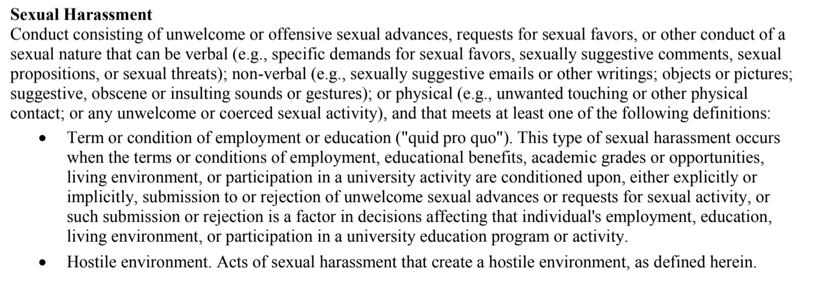
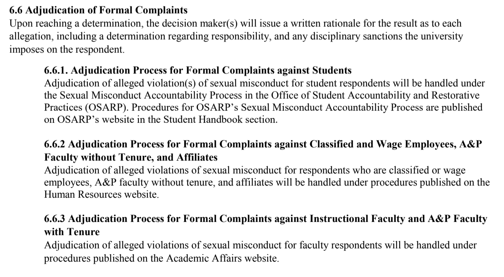

James Madison Universtiy
REDZONE
She was 15, it was the summer. It happened on a beach; it was her first time. Hannah P. was spending time on a family vacation with her boyfriend and his family when he sexually assaulted her. P. and her boyfriend were on the beach when it happened, and when it was over, her boyfriend told her she shouldn’t be upset. “He told me that I shouldn’t be upset because if I didn’t want to do it, it meant I didn’t love him,” Pollock said, “and that I definitely wanted to because I should have said no if I didn’t want to.” And when P. decided to confide in certain people about what happened, she was met with questions — if she had already been kissing him, making out with him or touching him before it had happened. “You could be making out, you could be right about to have sex, completely naked, and you could still say no because you don’t want to do it,” P.said.
BARRY Yellow black, yellow black, yellow black, yellow black, yellow black, yellow black...oohh, black and yellow... ANGLE ON: Barry wearing the sweater he picked, looking in the mirror. BARRY (CONT’D) Yeah, let’s shake it up a little. He picks the black and yellow one. He then goes to the sink, takes the top off a CONTAINER OF HONEY, and puts some honey into his hair. He squirts some in his mouth and gargles. Then he takes the lid off the bottle, and rolls some on like deodorant. CUT TO: INT. BENSON HOUSE KITCHEN - CONTINUOUS Barry’s mother, JANET BENSON, yells up at Barry. JANET BENSON Barry, breakfast is ready! CUT TO: "Bee Movie"
According to a 2002 study, about half of rapes were reported to police. Date rapes are less likely to be reported than those perpetrated by a stranger. Barriers to reporting include: not having proof that the incident occurred, fear of retaliation by the perpetrator, fear of hostile treatment by the authorities, uncertainty that the authorities would consider the incident serious enough, not knowing how to report the incident, and desire to prevent family and others from learning about it.
Furthermore, 42.1% didn’t report because unsure if harm was intended, 30% not reported because unsure if police would consider it serious enough,
38.9% didn’t want family to know.
Other reasons are alcohol & drug use and
adjudication policies
JMU’s Title IX Office “treats all disclosures and reports of sexual misconduct with great care and confidentiality and without bias, pre-judgement, or stereotyping, while balancing the duty to provide for individual and campus safety,” according to its website. Amy Sirocky-Meck, director of the Title IX Office and the university’s Title IX coordinator, is delegated by JMU President Jonathan Alger to interpret the national policies from the Department of Education. Policies 1340 and 1346 of Title IX — the federal law which prohibits sex discrimination — detail JMU’s policy in cases of sexual misconduct and sexual harassment, respectively. Both sections operate on similar policy, purpose and procedure; the difference lies in their definitions of sexual misconduct and sexual harassment outlined in Section 3 of both documents.
Policy 1340 identifies sexual misconduct as emcompassing “sexual assault, sexual violence, sexual harassment, sexual exploitation, stalking, dating violence, domestic violence, and non-consentual relationships” regardless of sexual orientation or gender identity. It defines sexual harassment as verbal, non-verbal or physical “conduct consisting of unwelcome or offensive sexual advances, requests for sexual favors, or other conduct of a sexual nature…” Policy 1346 expands on this definition, deeming an act sexual harassment if it meets one of three criteria: conduct that’s quid pro quo, an action that denies an individual equal access to the university’s programs or actions deemed sexual misconduct as defined in Policy 1340.
A ruling on a student’s formal complaint, outlined in Section 6.6, is conducted via a live hearing by the Office of Student Accountability and Restorative Practices (OSARP) and is overseen by Sirocky-Meck. After reaching a decision, a written document is issued determining the respondent’s responsibility, the university’s disciplinary action and its restorative action for the complainant’s Title IX rights. An alternative resolution to the formal complaint process, stated in Section 6.9.7, may be granted at the university’s discretion “on a case-by-case basis” but requires both the respondent’s and the complainant’s written consent — which may be revoked at any time. This process, however, “is not available when the complainant is a student and the respondent is an employee.”
If a student is found responsible for sexual misconduct or sexual harassment, they may be suspended or expelled for violating Student Standards of Conduct, according to Section 6.9.6. The student’s transcript will be marked with a notation, which will be automatically removed by the Office of the Registrar at the end of the suspension; notations in cases of expulsion are permanent. For confirmed instances of sexual harassment, OSARP may honor a request for removal after three years for “good cause shown.”

Decisions may be appealed based on three criteria in Section 6.8 that may affect the matter’s outcome: procedural irregularity, new evidence not “reasonably available” at the time of dismissal or determination of responsibility or any conflict of interest discovered among Title IX officials associated with the case.
JMU’s sexual violence prevention efforts fall into three categories: primary, secondary and tertiary efforts. Veronica Jones, JMU’s associate director for health promotion, described those three categories as the following:
Primary prevention means stopping something before it starts and involves methods such as, like through education on healthy relationships, communication and bystander intervention. Secondary prevention is focused onmore of the awareness aspect — things like sexual violence prevention programming or Domestic Violence Awareness Month. Finally, tertiary prevention involves the resources and support for individuals who have experienced sexual assault, Jones said.
Jones’ office in the University Recreation Center (UREC) — previously housed in University Health Center’s (UHC) “The Well” — focuses solely on primary prevention efforts. Secondary and tertiary efforts are handled by the UHC’s “The Well.”
Those efforts — which fall under the umbrella of “campus health promotion” — stand alongside other programs involving substance misuse prevention, wellness coaching and bystander intervention. As part of the work by the campus health promotion office — Jones’ office — incoming freshmen, transfer students and graduate students must participate in online training programs through the learning platform Everfi. The state of Virginia has a contract with Everfi and JMU’s contract with the company has been in place since 2012. The two mandatory programs for incoming students are AlcoholEdu and Sexual Assault Prevention. Human Resources oversees mandatory employee training on Everfi, which includes sexual harassment training, Title IX training and diversity and inclusion training.
As primary administrator for the student programs, Jones said she ensures that JMU content is integrated in the AlcoholEdu and Sexual Assault Prevention courses. This content includes university-specific policies, student handbook definitions and resources. Jones said the student completion rate for these Everfi courses is about 75%. When students complete these courses outside of the semester they’re assigned, they may not show up as complete on reports, which Jones said is why the rate isn’t at 100%. Students who don’t complete the courses by their deadline receive holds on their student accounts until the trainings are finished. “Every time I talk to Everfi, they're like, ‘That's really good,’” Jones said. “So we are doing very good with that.”
This year, Jones said the health promotion team trained first year orientation guides (FROGs) and orientation peer advisors (OPAs) — students who help new Dukes navigate their arrival on JMU’s campus — to have a discussion with their student groups about relationships and community well-being. She said the health promotion team also leads a program with international students about relationships and communication consent. Jones’ team is currently working to restructure and relaunch the bystander intervention program Green Dot, which used to be provided to incoming students and is currently available for student organizations, classes and student staff. She said she had “mixed feelings” about Green Dot previously being mandatory for incoming students. “I believe that people need those skills,” Jones said. “And yet, you cannot expect or empower the newest members to a community to change the norms for everyone else.”
When it comes to sexual wellness programming, the health promotion team works with groups other than incoming students, too. Jones said her department works with hall directors, resident advisors (RAs) and Student Life staff to provide trainings on sexual wellness, how to recognize relationship abuse and harm and where resources are available on campus. There are also opportunities for student organizations to work with the health promotion team — Jones said last year, her office partnered with Fraternity and Sorority Life (FSL) to provide training for the organization’s leaders.
However, even with the sexual and relationship programming that the health promotion team currently has in place, Jones said there’s a gap in who they’re able to reach. The Everfi sexual assault prevention program is mandatory for incoming students, but after that, any other resources to provide education on sexual wellness are optional. In order to engage with upperclassmen, Jones said her team has done much to reach out to campus student organizations. She said they’re also trying to come up with more passive or informal messaging, like posters around campus with information on sexual wellness. However, connecting with upperclassmen remains a difficulty. “I think it's really hard because we have a really great mechanism for reaching a lot of our first-year students with required programming,” Jones said. “How do we reach our other students? That's the really hard part about it.”
Jones said the Red Zone — the period in the academic year from the start of the fall semester to Thanksgiving break wherein nationally, the most sexual assaults occur — is a problem at every university, including JMU. She said the Red Zone as a specific issue is difficult to tackle because, at the beginning of college, so many individuals with varying levels of sex education and experiences are coming together in one place with newfound freedom.“That first time here is a time where it is a prime time for, unfortunately, individuals to experience harm and be harmed by others,” Jones said.
While the Red Zone remains a problem, Jones said, her team doesn’t specifically market efforts as those that address it. She said this kind of strategy would be fear-based programming, which they steer away from. Instead of being motivated by fear, Jones said she believes people would rather be empowered with knowledge. Instead, she said, she believes “everything we do is addressing the Red Zone.” In order for students to protect themselves from sexual assault, Jones encouraged them to be curious in learning about how to stop these behaviors both on and off campus. She said self-awareness is also important when assessing these problems at JMU — not just during the red zone, but all the time. “I would say it's not even during the red zone — it's all the time,” Jones said. “I have heard some preventionists say a whole college experience can be a red zone, because everyone is at risk.”
There are many good resources related to sexual violence, dating violence, stalking, and prevention and advocacy. This list is not exhaustive; however, these are some that we turn to frequently. Whether you’re looking for direct services, want to learn more, or are curious about careers in this field, these can be a good place to start.
The Collins Center is the sexual assault crisis center and Children’s Advocacy Center (CAC) for Harrisonburg and Rockingham County. They serve individuals of all ages and identities who have experienced sexual violence or child sexual abuse. In addition to therapy services, prevention programming, and the CAC, they maintain a 24-hour crisis hotline and can provide advocacy and accompaniment services similar to JMU’s Survivor Advocates. (540) 432-6430
First Step is the domestic violence shelter serving Harrisonburg and Rockingham County. They maintain a 24-hour crisis hotline and can provide advocacy and accompaniment services to people who have experienced domestic violence. They also run support groups. (540) 434-0295
JMU Title IX maintains a list of campus-based resources, including confidential resources, reporting resources, a resource guide, and FAQs. This site also outlines information about Title IX at JMU.
Seek Then Speak is a digital aid that helps you gather information, make decisions, and take action if you’ve experienced a sexual assault. By guiding you through a series of questions, you can figure out what options are right for you while still remaining anonymous as long as you’d like.